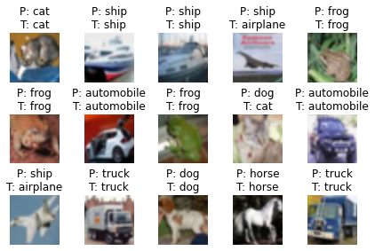

Lecture 5: Evolution of CNN Architectures for Image Classification - Part02 Code
Contents

Lecture 5: Evolution of CNN Architectures for Image Classification - Part02 Code #
#@title
from ipywidgets import widgets
out1 = widgets.Output()
with out1:
from IPython.display import YouTubeVideo
video = YouTubeVideo(id=f"YizB_RoGrMs", width=854, height=480, fs=1, rel=0)
print("Video available at https://youtube.com/watch?v=" + video.id)
display(video)
display(out1)
#@title
from IPython import display as IPyDisplay
IPyDisplay.HTML(
f"""
<div>
<a href= "https://github.com/DL4CV-NPTEL/Deep-Learning-For-Computer-Vision/blob/main/Slides/Week_5/DL4CV_Week05_Part03.pdf" target="_blank">
<img src="https://github.com/DL4CV-NPTEL/Deep-Learning-For-Computer-Vision/blob/main/Data/Slides_Logo.png?raw=1"
alt="button link to Airtable" style="width:200px"></a>
</div>""" )
Imports
import torch
from torch.utils.data import sampler
import torchvision
from torchvision import datasets
from torch.utils.data import DataLoader
from torch.utils.data import SubsetRandomSampler
from torchvision import transforms
import os
import numpy as np
import random
from distutils.version import LooseVersion as Version
from itertools import product
import time
import matplotlib.pyplot as plt
Helper function for Dataloading
class UnNormalize(object):
def __init__(self, mean, std):
self.mean = mean
self.std = std
def __call__(self, tensor):
"""
Parameters:
------------
tensor (Tensor): Tensor image of size (C, H, W) to be normalized.
Returns:
------------
Tensor: Normalized image.
"""
for t, m, s in zip(tensor, self.mean, self.std):
t.mul_(s).add_(m)
return tensor
def get_dataloaders_mnist(batch_size, num_workers=0,
validation_fraction=None,
train_transforms=None,
test_transforms=None):
if train_transforms is None:
train_transforms = transforms.ToTensor()
if test_transforms is None:
test_transforms = transforms.ToTensor()
train_dataset = datasets.MNIST(root='data',
train=True,
transform=train_transforms,
download=True)
valid_dataset = datasets.MNIST(root='data',
train=True,
transform=test_transforms)
test_dataset = datasets.MNIST(root='data',
train=False,
transform=test_transforms)
if validation_fraction is not None:
num = int(validation_fraction * 60000)
train_indices = torch.arange(0, 60000 - num)
valid_indices = torch.arange(60000 - num, 60000)
train_sampler = SubsetRandomSampler(train_indices)
valid_sampler = SubsetRandomSampler(valid_indices)
valid_loader = DataLoader(dataset=valid_dataset,
batch_size=batch_size,
num_workers=num_workers,
sampler=valid_sampler)
train_loader = DataLoader(dataset=train_dataset,
batch_size=batch_size,
num_workers=num_workers,
drop_last=True,
sampler=train_sampler)
else:
train_loader = DataLoader(dataset=train_dataset,
batch_size=batch_size,
num_workers=num_workers,
drop_last=True,
shuffle=True)
test_loader = DataLoader(dataset=test_dataset,
batch_size=batch_size,
num_workers=num_workers,
shuffle=False)
if validation_fraction is None:
return train_loader, test_loader
else:
return train_loader, valid_loader, test_loader
def get_dataloaders_cifar10(batch_size, num_workers=0,
validation_fraction=None,
train_transforms=None,
test_transforms=None):
if train_transforms is None:
train_transforms = transforms.ToTensor()
if test_transforms is None:
test_transforms = transforms.ToTensor()
train_dataset = datasets.CIFAR10(root='data',
train=True,
transform=train_transforms,
download=True)
valid_dataset = datasets.CIFAR10(root='data',
train=True,
transform=test_transforms)
test_dataset = datasets.CIFAR10(root='data',
train=False,
transform=test_transforms)
if validation_fraction is not None:
num = int(validation_fraction * 50000)
train_indices = torch.arange(0, 50000 - num)
valid_indices = torch.arange(50000 - num, 50000)
train_sampler = SubsetRandomSampler(train_indices)
valid_sampler = SubsetRandomSampler(valid_indices)
valid_loader = DataLoader(dataset=valid_dataset,
batch_size=batch_size,
num_workers=num_workers,
sampler=valid_sampler)
train_loader = DataLoader(dataset=train_dataset,
batch_size=batch_size,
num_workers=num_workers,
drop_last=True,
sampler=train_sampler)
else:
train_loader = DataLoader(dataset=train_dataset,
batch_size=batch_size,
num_workers=num_workers,
drop_last=True,
shuffle=True)
test_loader = DataLoader(dataset=test_dataset,
batch_size=batch_size,
num_workers=num_workers,
shuffle=False)
if validation_fraction is None:
return train_loader, test_loader
else:
return train_loader, valid_loader, test_loader
Helper function for evaluation
def set_all_seeds(seed):
os.environ["PL_GLOBAL_SEED"] = str(seed)
random.seed(seed)
np.random.seed(seed)
torch.manual_seed(seed)
torch.cuda.manual_seed_all(seed)
def set_deterministic(use_tensorcores=False):
if torch.cuda.is_available():
torch.backends.cudnn.benchmark = False
torch.backends.cudnn.deterministic = True
if torch.__version__ <= Version("1.7"):
torch.set_deterministic(True)
else:
torch.use_deterministic_algorithms(True)
# The following are set to True by default and allow cards
# like the Ampere and newer to utilize tensorcores for
# convolutions and matrix multiplications, which can result
# in a significant speed-up. However, results may differ compared
# to card how don't use mixed precision via tensor cores.
torch.backends.cuda.matmul.allow_tf32 = use_tensorcores
torch.backends.cudnn.allow_tf32 = use_tensorcores
def compute_accuracy(model, data_loader, device):
with torch.no_grad():
correct_pred, num_examples = 0, 0
for i, (features, targets) in enumerate(data_loader):
features = features.to(device)
targets = targets.float().to(device)
logits = model(features)
_, predicted_labels = torch.max(logits, 1)
num_examples += targets.size(0)
correct_pred += (predicted_labels == targets).sum()
return correct_pred.float()/num_examples * 100
def compute_confusion_matrix(model, data_loader, device):
all_targets, all_predictions = [], []
with torch.no_grad():
for i, (features, targets) in enumerate(data_loader):
features = features.to(device)
targets = targets
logits = model(features)
_, predicted_labels = torch.max(logits, 1)
all_targets.extend(targets.to('cpu'))
all_predictions.extend(predicted_labels.to('cpu'))
all_predictions = all_predictions
all_predictions = np.array(all_predictions)
all_targets = np.array(all_targets)
class_labels = np.unique(np.concatenate((all_targets, all_predictions)))
if class_labels.shape[0] == 1:
if class_labels[0] != 0:
class_labels = np.array([0, class_labels[0]])
else:
class_labels = np.array([class_labels[0], 1])
n_labels = class_labels.shape[0]
lst = []
z = list(zip(all_targets, all_predictions))
for combi in product(class_labels, repeat=2):
lst.append(z.count(combi))
mat = np.asarray(lst)[:, None].reshape(n_labels, n_labels)
return mat
Helper function for training
import time
import torch
def train_model(model, num_epochs, train_loader,
valid_loader, test_loader, optimizer,
device, logging_interval=50,
scheduler=None,
scheduler_on='valid_acc'):
start_time = time.time()
minibatch_loss_list, train_acc_list, valid_acc_list = [], [], []
for epoch in range(num_epochs):
model.train()
for batch_idx, (features, targets) in enumerate(train_loader):
features = features.to(device)
targets = targets.to(device)
# ## FORWARD AND BACK PROP
logits = model(features)
loss = torch.nn.functional.cross_entropy(logits, targets)
optimizer.zero_grad()
loss.backward()
# ## UPDATE MODEL PARAMETERS
optimizer.step()
# ## LOGGING
minibatch_loss_list.append(loss.item())
if not batch_idx % logging_interval:
print(f'Epoch: {epoch+1:03d}/{num_epochs:03d} '
f'| Batch {batch_idx:04d}/{len(train_loader):04d} '
f'| Loss: {loss:.4f}')
model.eval()
with torch.no_grad(): # save memory during inference
train_acc = compute_accuracy(model, train_loader, device=device)
valid_acc = compute_accuracy(model, valid_loader, device=device)
print(f'Epoch: {epoch+1:03d}/{num_epochs:03d} '
f'| Train: {train_acc :.2f}% '
f'| Validation: {valid_acc :.2f}%')
train_acc_list.append(train_acc.item())
valid_acc_list.append(valid_acc.item())
elapsed = (time.time() - start_time)/60
print(f'Time elapsed: {elapsed:.2f} min')
if scheduler is not None:
if scheduler_on == 'valid_acc':
scheduler.step(valid_acc_list[-1])
elif scheduler_on == 'minibatch_loss':
scheduler.step(minibatch_loss_list[-1])
else:
raise ValueError(f'Invalid `scheduler_on` choice.')
elapsed = (time.time() - start_time)/60
print(f'Total Training Time: {elapsed:.2f} min')
test_acc = compute_accuracy(model, test_loader, device=device)
print(f'Test accuracy {test_acc :.2f}%')
return minibatch_loss_list, train_acc_list, valid_acc_list
Helper function for Plotting
def plot_training_loss(minibatch_loss_list, num_epochs, iter_per_epoch,
results_dir=None, averaging_iterations=100):
plt.figure()
ax1 = plt.subplot(1, 1, 1)
ax1.plot(range(len(minibatch_loss_list)),
(minibatch_loss_list), label='Minibatch Loss')
if len(minibatch_loss_list) > 1000:
ax1.set_ylim([
0, np.max(minibatch_loss_list[1000:])*1.5
])
ax1.set_xlabel('Iterations')
ax1.set_ylabel('Loss')
ax1.plot(np.convolve(minibatch_loss_list,
np.ones(averaging_iterations,)/averaging_iterations,
mode='valid'),
label='Running Average')
ax1.legend()
###################
# Set scond x-axis
ax2 = ax1.twiny()
newlabel = list(range(num_epochs+1))
newpos = [e*iter_per_epoch for e in newlabel]
ax2.set_xticks(newpos[::10])
ax2.set_xticklabels(newlabel[::10])
ax2.xaxis.set_ticks_position('bottom')
ax2.xaxis.set_label_position('bottom')
ax2.spines['bottom'].set_position(('outward', 45))
ax2.set_xlabel('Epochs')
ax2.set_xlim(ax1.get_xlim())
###################
plt.tight_layout()
if results_dir is not None:
image_path = os.path.join(results_dir, 'plot_training_loss.pdf')
plt.savefig(image_path)
def plot_accuracy(train_acc_list, valid_acc_list, results_dir):
num_epochs = len(train_acc_list)
plt.plot(np.arange(1, num_epochs+1),
train_acc_list, label='Training')
plt.plot(np.arange(1, num_epochs+1),
valid_acc_list, label='Validation')
plt.xlabel('Epoch')
plt.ylabel('Accuracy')
plt.legend()
plt.tight_layout()
if results_dir is not None:
image_path = os.path.join(
results_dir, 'plot_acc_training_validation.pdf')
plt.savefig(image_path)
def show_examples(model, data_loader, unnormalizer=None, class_dict=None):
for batch_idx, (features, targets) in enumerate(data_loader):
with torch.no_grad():
features = features
targets = targets
logits = model(features)
predictions = torch.argmax(logits, dim=1)
break
fig, axes = plt.subplots(nrows=3, ncols=5,
sharex=True, sharey=True)
if unnormalizer is not None:
for idx in range(features.shape[0]):
features[idx] = unnormalizer(features[idx])
nhwc_img = np.transpose(features, axes=(0, 2, 3, 1))
if nhwc_img.shape[-1] == 1:
nhw_img = np.squeeze(nhwc_img.numpy(), axis=3)
for idx, ax in enumerate(axes.ravel()):
ax.imshow(nhw_img[idx], cmap='binary')
if class_dict is not None:
ax.title.set_text(f'P: {class_dict[predictions[idx].item()]}'
f'\nT: {class_dict[targets[idx].item()]}')
else:
ax.title.set_text(f'P: {predictions[idx]} | T: {targets[idx]}')
ax.axison = False
else:
for idx, ax in enumerate(axes.ravel()):
ax.imshow(nhwc_img[idx])
if class_dict is not None:
ax.title.set_text(f'P: {class_dict[predictions[idx].item()]}'
f'\nT: {class_dict[targets[idx].item()]}')
else:
ax.title.set_text(f'P: {predictions[idx]} | T: {targets[idx]}')
ax.axison = False
plt.tight_layout()
plt.show()
def plot_confusion_matrix(conf_mat,
hide_spines=False,
hide_ticks=False,
figsize=None,
cmap=None,
colorbar=False,
show_absolute=True,
show_normed=False,
class_names=None):
if not (show_absolute or show_normed):
raise AssertionError('Both show_absolute and show_normed are False')
if class_names is not None and len(class_names) != len(conf_mat):
raise AssertionError('len(class_names) should be equal to number of'
'classes in the dataset')
total_samples = conf_mat.sum(axis=1)[:, np.newaxis]
normed_conf_mat = conf_mat.astype('float') / total_samples
fig, ax = plt.subplots(figsize=figsize)
ax.grid(False)
if cmap is None:
cmap = plt.cm.Blues
if figsize is None:
figsize = (len(conf_mat)*1.25, len(conf_mat)*1.25)
if show_normed:
matshow = ax.matshow(normed_conf_mat, cmap=cmap)
else:
matshow = ax.matshow(conf_mat, cmap=cmap)
if colorbar:
fig.colorbar(matshow)
for i in range(conf_mat.shape[0]):
for j in range(conf_mat.shape[1]):
cell_text = ""
if show_absolute:
cell_text += format(conf_mat[i, j], 'd')
if show_normed:
cell_text += "\n" + '('
cell_text += format(normed_conf_mat[i, j], '.2f') + ')'
else:
cell_text += format(normed_conf_mat[i, j], '.2f')
ax.text(x=j,
y=i,
s=cell_text,
va='center',
ha='center',
color="white" if normed_conf_mat[i, j] > 0.5 else "black")
if class_names is not None:
tick_marks = np.arange(len(class_names))
plt.xticks(tick_marks, class_names, rotation=90)
plt.yticks(tick_marks, class_names)
if hide_spines:
ax.spines['right'].set_visible(False)
ax.spines['top'].set_visible(False)
ax.spines['left'].set_visible(False)
ax.spines['bottom'].set_visible(False)
ax.yaxis.set_ticks_position('left')
ax.xaxis.set_ticks_position('bottom')
if hide_ticks:
ax.axes.get_yaxis().set_ticks([])
ax.axes.get_xaxis().set_ticks([])
plt.xlabel('predicted label')
plt.ylabel('true label')
return fig, ax
ResNet-34 on Cifar-10#
Setting and Dataset
RANDOM_SEED = 123
BATCH_SIZE = 256
NUM_EPOCHS = 5
DEVICE = torch.device('cuda:0' if torch.cuda.is_available() else 'cpu')
set_all_seeds(RANDOM_SEED)
##########################
### CIFAR-10 DATASET
##########################
train_transforms = torchvision.transforms.Compose([
torchvision.transforms.Resize((120, 120)),
torchvision.transforms.RandomCrop((110, 110)),
torchvision.transforms.ToTensor(),
torchvision.transforms.Normalize((0.5, 0.5, 0.5), (0.5, 0.5, 0.5))
])
test_transforms = torchvision.transforms.Compose([
torchvision.transforms.Resize((120, 120)),
torchvision.transforms.CenterCrop((110, 110)),
torchvision.transforms.ToTensor(),
torchvision.transforms.Normalize((0.5, 0.5, 0.5), (0.5, 0.5, 0.5))])
train_loader, valid_loader, test_loader = get_dataloaders_cifar10(
batch_size=BATCH_SIZE,
validation_fraction=0.1,
train_transforms=train_transforms,
test_transforms=test_transforms,
num_workers=1)
# Checking the dataset
for images, labels in train_loader:
print('Image batch dimensions:', images.shape)
print('Image label dimensions:', labels.shape)
print('Class labels of 10 examples:', labels[:10])
break
Downloading https://www.cs.toronto.edu/~kriz/cifar-10-python.tar.gz to data/cifar-10-python.tar.gz
Extracting data/cifar-10-python.tar.gz to data
Image batch dimensions: torch.Size([256, 3, 110, 110])
Image label dimensions: torch.Size([256])
Class labels of 10 examples: tensor([4, 7, 4, 6, 2, 6, 9, 7, 3, 0])
Model#
# Code taken & adjusted from: https://github.com/pytorch/vision/blob/master/torchvision/models/resnet.py
def conv3x3(in_planes, out_planes, stride=1, groups=1, dilation=1):
"""3x3 convolution with padding"""
return torch.nn.Conv2d(in_planes, out_planes, kernel_size=3, stride=stride,
padding=dilation, groups=groups, bias=False, dilation=dilation)
def conv1x1(in_planes, out_planes, stride=1):
"""1x1 convolution"""
return torch.nn.Conv2d(in_planes, out_planes, kernel_size=1, stride=stride, bias=False)
class BasicBlock(torch.nn.Module):
expansion: int = 1
def __init__(self, inplanes, planes, stride=1, downsample=None,
groups=1, base_width=64, dilation=1, norm_layer=None):
super().__init__()
if norm_layer is None:
norm_layer = torch.nn.BatchNorm2d
if groups != 1 or base_width != 64:
raise ValueError('BasicBlock only supports groups=1 and base_width=64')
if dilation > 1:
raise NotImplementedError("Dilation > 1 not supported in BasicBlock")
# Both self.conv1 and self.downsample layers downsample the input when stride != 1
self.conv1 = conv3x3(inplanes, planes, stride)
self.bn1 = norm_layer(planes)
self.relu = torch.nn.ReLU(inplace=True)
self.conv2 = conv3x3(planes, planes)
self.bn2 = norm_layer(planes)
self.downsample = downsample
self.stride = stride
def forward(self, x):
identity = x
out = self.conv1(x)
out = self.bn1(out)
out = self.relu(out)
out = self.conv2(out)
out = self.bn2(out)
if self.downsample is not None:
identity = self.downsample(x)
out += identity
out = self.relu(out)
return out
class Bottleneck(torch.nn.Module):
# Bottleneck in torchvision places the stride for downsampling at 3x3 convolution(self.conv2)
# while original implementation places the stride at the first 1x1 convolution(self.conv1)
# according to "Deep residual learning for image recognition"https://arxiv.org/abs/1512.03385.
# This variant is also known as ResNet V1.5 and improves accuracy according to
# https://ngc.nvidia.com/catalog/model-scripts/nvidia:resnet_50_v1_5_for_pytorch.
expansion=4
def __init__(self, inplanes, planes, stride=1, downsample=None,
groups=1, base_width=64, dilation=1, norm_layer=None):
super().__init__()
if norm_layer is None:
norm_layer = torch.nn.BatchNorm2d
width = int(planes * (base_width / 64.)) * groups
# Both self.conv2 and self.downsample layers downsample the input when stride != 1
self.conv1 = conv1x1(inplanes, width)
self.bn1 = norm_layer(width)
self.conv2 = conv3x3(width, width, stride, groups, dilation)
self.bn2 = norm_layer(width)
self.conv3 = conv1x1(width, planes * self.expansion)
self.bn3 = norm_layer(planes * self.expansion)
self.relu = torch.nn.ReLU(inplace=True)
self.downsample = downsample
self.stride = stride
def forward(self, x):
identity = x
out = self.conv1(x)
out = self.bn1(out)
out = self.relu(out)
out = self.conv2(out)
out = self.bn2(out)
out = self.relu(out)
out = self.conv3(out)
out = self.bn3(out)
if self.downsample is not None:
identity = self.downsample(x)
out += identity
out = self.relu(out)
return out
class ResNet(torch.nn.Module):
def __init__(self, block, layers, num_classes, zero_init_residual=False, groups=1,
width_per_group=64, replace_stride_with_dilation=None, norm_layer=None):
super().__init__()
if norm_layer is None:
norm_layer = torch.nn.BatchNorm2d
self._norm_layer = norm_layer
self.inplanes = 64
self.dilation = 1
if replace_stride_with_dilation is None:
# each element in the tuple indicates if we should replace
# the 2x2 stride with a dilated convolution instead
replace_stride_with_dilation = [False, False, False]
if len(replace_stride_with_dilation) != 3:
raise ValueError("replace_stride_with_dilation should be None "
"or a 3-element tuple, got {}".format(replace_stride_with_dilation))
self.groups = groups
self.base_width = width_per_group
self.conv1 = torch.nn.Conv2d(3, self.inplanes, kernel_size=7, stride=2, padding=3,
bias=False)
self.bn1 = norm_layer(self.inplanes)
self.relu = torch.nn.ReLU(inplace=True)
self.maxpool = torch.nn.MaxPool2d(kernel_size=3, stride=2, padding=1)
self.layer1 = self._make_layer(block, 64, layers[0])
self.layer2 = self._make_layer(block, 128, layers[1], stride=2,
dilate=replace_stride_with_dilation[0])
self.layer3 = self._make_layer(block, 256, layers[2], stride=2,
dilate=replace_stride_with_dilation[1])
self.layer4 = self._make_layer(block, 512, layers[3], stride=2,
dilate=replace_stride_with_dilation[2])
self.avgpool = torch.nn.AdaptiveAvgPool2d((1, 1))
self.fc = torch.nn.Linear(512 * block.expansion, num_classes)
for m in self.modules():
if isinstance(m, torch.nn.Conv2d):
torch.nn.init.kaiming_normal_(m.weight, mode='fan_out', nonlinearity='relu')
elif isinstance(m, (torch.nn.BatchNorm2d, torch.nn.GroupNorm)):
torch.nn.init.constant_(m.weight, 1)
torch.nn.init.constant_(m.bias, 0)
# Zero-initialize the last BN in each residual branch,
# so that the residual branch starts with zeros, and each residual block behaves like an identity.
# This improves the model by 0.2~0.3% according to https://arxiv.org/abs/1706.02677
if zero_init_residual:
for m in self.modules():
if isinstance(m, Bottleneck):
torch.nn.init.constant_(m.bn3.weight, 0)
elif isinstance(m, BasicBlock):
torch.nn.init.constant_(m.bn2.weight, 0)
def _make_layer(self, block, planes, blocks,
stride=1, dilate=False):
norm_layer = self._norm_layer
downsample = None
previous_dilation = self.dilation
if dilate:
self.dilation *= stride
stride = 1
if stride != 1 or self.inplanes != planes * block.expansion:
downsample = torch.nn.Sequential(
conv1x1(self.inplanes, planes * block.expansion, stride),
norm_layer(planes * block.expansion),
)
layers = []
layers.append(block(self.inplanes, planes, stride, downsample, self.groups,
self.base_width, previous_dilation, norm_layer))
self.inplanes = planes * block.expansion
for _ in range(1, blocks):
layers.append(block(self.inplanes, planes, groups=self.groups,
base_width=self.base_width, dilation=self.dilation,
norm_layer=norm_layer))
return torch.nn.Sequential(*layers)
def forward(self, x):
x = self.conv1(x)
x = self.bn1(x)
x = self.relu(x)
x = self.maxpool(x)
x = self.layer1(x)
x = self.layer2(x)
x = self.layer3(x)
x = self.layer4(x)
x = self.avgpool(x)
x = torch.flatten(x, 1)
x = self.fc(x)
return x
model = ResNet(BasicBlock, layers=[3, 4, 6, 3], num_classes=10) # ResNet34
model = model.to(DEVICE)
optimizer = torch.optim.SGD(model.parameters(), momentum=0.9, lr=0.1)
scheduler = torch.optim.lr_scheduler.ReduceLROnPlateau(optimizer,
factor=0.1,
mode='max',
verbose=True)
minibatch_loss_list, train_acc_list, valid_acc_list = train_model(
model=model,
num_epochs=NUM_EPOCHS,
train_loader=train_loader,
valid_loader=valid_loader,
test_loader=test_loader,
optimizer=optimizer,
device=DEVICE,
scheduler=scheduler,
scheduler_on='valid_acc',
logging_interval=100)
plot_training_loss(minibatch_loss_list=minibatch_loss_list,
num_epochs=NUM_EPOCHS,
iter_per_epoch=len(train_loader),
results_dir=None,
averaging_iterations=200)
plt.show()
plot_accuracy(train_acc_list=train_acc_list,
valid_acc_list=valid_acc_list,
results_dir=None)
plt.show()
Epoch: 001/005 | Batch 0000/0175 | Loss: 2.5130
Epoch: 001/005 | Batch 0100/0175 | Loss: 2.2354
Epoch: 001/005 | Train: 21.68% | Validation: 21.02%
Time elapsed: 2.16 min
Epoch: 002/005 | Batch 0000/0175 | Loss: 1.9366
Epoch: 002/005 | Batch 0100/0175 | Loss: 1.8241
Epoch: 002/005 | Train: 34.18% | Validation: 35.28%
Time elapsed: 4.25 min
Epoch: 003/005 | Batch 0000/0175 | Loss: 1.7540
Epoch: 003/005 | Batch 0100/0175 | Loss: 1.5435
Epoch: 003/005 | Train: 45.24% | Validation: 45.38%
Time elapsed: 6.36 min
Epoch: 004/005 | Batch 0000/0175 | Loss: 1.3630
Epoch: 004/005 | Batch 0100/0175 | Loss: 1.3847
Epoch: 004/005 | Train: 51.59% | Validation: 52.54%
Time elapsed: 8.46 min
Epoch: 005/005 | Batch 0000/0175 | Loss: 1.3260
Epoch: 005/005 | Batch 0100/0175 | Loss: 1.2668
Epoch: 005/005 | Train: 58.43% | Validation: 58.26%
Time elapsed: 10.58 min
Total Training Time: 10.58 min
Test accuracy 57.11%
model.cpu()
unnormalizer = UnNormalize((0.5, 0.5, 0.5), (0.5, 0.5, 0.5))
class_dict = {0: 'airplane',
1: 'automobile',
2: 'bird',
3: 'cat',
4: 'deer',
5: 'dog',
6: 'frog',
7: 'horse',
8: 'ship',
9: 'truck'}
show_examples(model=model, data_loader=test_loader, unnormalizer=unnormalizer, class_dict=class_dict)

Acknowledgements
Code adopted from the excellent lectures of Sebastian Raschka